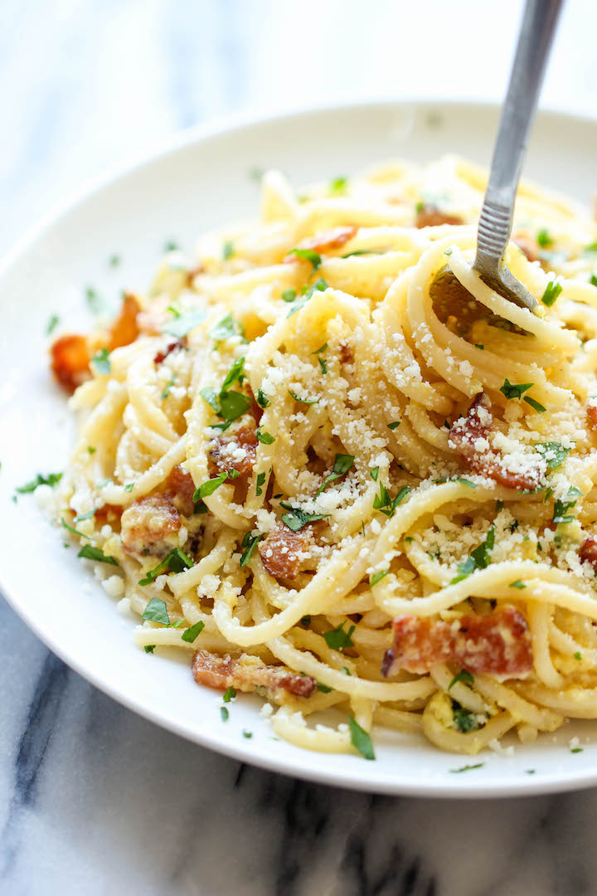

Spaghetti Carbonara Recipe

The easiest pasta dish you will ever make with just 5 ingredients in 15 min, loaded with Parmesan and crisp bacon goodness!
I have yet another super easy pasta dish for you all today. And the best part about this dish is that you only need 5 ingredients to whip this up! No wait, the best part is the bacon. Yeah, the bacon.
No, but really, this is one of those dishes that comes together in 15 minutes or less with just 5 ingredients of spaghetti, bacon, garlic, Parmesan and eggs. And if you’re skeptical about the raw eggs, it actually gets cooked through completely from the residual heat. Just be sure to work quickly so you don’t end up with scrambled eggs. Plus, with the crisp bacon bits, you just can’t go wrong with this dish!
Ingredients
- 8 ounces spaghetti
- 2 large eggs
- 1/2 cup freshly grated Parmesan
- 4 slices bacon, diced
- 4 cloves garlic, minced
- Kosher salt and freshly ground black pepper, to taste
- 2 tablespoons chopped fresh parsley leaves
Instructions
- In a large pot of boiling salted water, cook pasta according to package instructions; reserve 1/2 cup water and drain well.
- In a small bowl, whisk together eggs and Parmesan; set aside.
- Heat a large cast iron skillet over medium high heat. Add bacon and cook until brown and crispy, about 6-8 minutes; reserve excess fat.
- Stir in garlic until fragrant, about 1 minute. Reduce heat to low.
- Working quickly, stir in pasta and egg mixture, and gently toss to combine; season with salt and pepper, to taste. Add reserved pasta water, one tablespoon at a time, until desired consistency is reached.
- Serve immediately, garnished with parsley, if desired.